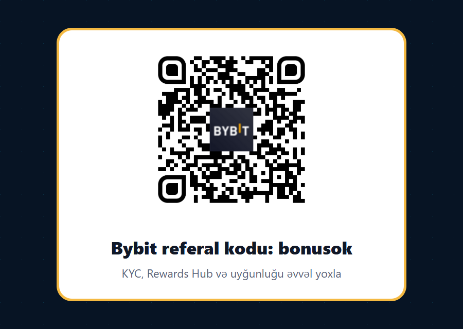

Bybit referal kodu bonusok: Azərbaycan traderləri üçün tam uyğunluq və risk checklist
Əgər siz Bybit referal kodu, Bybit referral code, Bybit dəvət kodu, Bybit promo kodu və ya bonusok axtarırsınızsa, ən vacib sual yalnız “haradan qeydiyyatdan keçim?” deyil. Aktiv trader üçün daha vacib sual budur: Bybit sizin rezidentliyiniz, KYC sənədləriniz, istifadə etmək istədiyiniz məhsullar, P2P/AZN marşrutu, risk səviyyəniz və ticarət həcminiz üçün həqiqətən uyğundurmu?
Niyə Azərbaycan üçün fərqli yanaşma lazımdır?
Azərbaycan auditoriyası üçün referral materialı sadəcə “bonus al” mətnindən ibarət olmamalıdır. Bakıda və regionlarda kriptoya maraq artır, amma bank ödənişləri, kart əməliyyatları, P2P qarşı tərəf riski, vergi və yerli hüquqi mühit kimi mövzular hər istifadəçi üçün eyni deyil. Azərbaycan Mərkəzi Bankının kripto ilə bağlı ehtiyatlı mövqeyi illərdir açıq şəkildə görünür: virtual aktivlər qanuni ödəniş vasitəsi kimi təqdim edilməməli, investorlar qiymət volatilliyi və əməliyyat risklərini anlamalıdır. Buna görə də bu səhifə “bypass et” və ya “VPN ilə aç” məntiqi ilə yazılmayıb. Əksinə, məqsəd ciddi traderi əvvəlcə uyğunluq, sənəd, risk və product availability barədə düşünməyə məcbur etməkdir.
Bybit-in özü də Service Restricted Countries siyahısını saxlayır və yanlış rezidentlik, saxta location və ya qaydalardan yayınma hesabın bağlanması və mövqelərin ləğvi kimi ağır nəticələrə gətirə bilər. Azərbaycan həmin səhifədə necə görünürsə, gələcəkdə dəyişə bilər; buna görə qeydiyyatdan əvvəl yalnız bizim məqaləyə yox, Bybit-in rəsmi help center və terms səhifələrinə baxmaq vacibdir. Aktiv trader üçün ən yaxşı referral click o click-dir ki, istifadəçi əvvəlcədən “mən bu məhsulu istifadə edə bilərəmmi, KYC keçə bilərəmmi, yerli qanuna uyğundurmu?” suallarına cavab axtarır.
bonusok kodu nədir və necə istifadə olunur?
Bybit üçün referral linkimiz https://partner.bybit.com/b/bonusok, promo/referal kod isə bonusok-dur. Linki açanda partner flow vasitəsilə qeydiyyat başlayır. Sonra istifadəçi hesab daxilində KYC, Rewards Hub, campaign səhifələri və product availability yoxlamalıdır. Bəzən bonus “up to” formatında olur, yəni maksimum rəqəm yalnız müəyyən task-lar, deposit, trade volume, KYC level, region və tarix şərtləri yerinə yetiriləndə mümkün olur.
Bu səbəbdən bonusok-u “pulsuz pul” kimi yox, giriş nöqtəsi kimi düşünmək daha düzgündür. Əvvəl qeydiyyat kanalının düzgün tətbiq olunduğunu yoxlayın, sonra Rewards Hub-da hansı reward növlərinin hesabınıza açıldığını görün. Bybit Rewards Hub FAQ-da bonus, coupon, fee saver, airdrop, fee discount, APY booster, loss cover voucher və trial fund kimi fərqli reward növləri təsvir olunur. Hər birinin expiry, product scope və istifadə qaydası fərqli ola bilər. Aktiv trader üçün bu məlumatlar komissiya, spread və execution qədər vacibdir.
QR ilə aç və ya linkdən istifadə et
Bu QR real Bybit partner linkindən götürülüb və dərcdən əvvəl lokal olaraq dekod edilib. Mobil istifadəçi QR-i skan edə bilər, desktop istifadəçisi isə düymədən istifadə edə bilər. Qeydiyyatdan əvvəl rezidentlik, sənəd, ölkə və məhsul uyğunluğunu yoxlamağı unutmayın.
bonusok partner linki
2026 yayında Bybit-də aktiv trader üçün diqqət çəkən yeniliklər
Son Bybit yenilikləri aktiv traderlər üçün dörd mövzuda güclüdür: kampaniyalar, AI trading workflow, RWA/TradFi bazarları və yüksək performanslı execution alətləri. Bu səhifədə onları referral kontekstinə ona görə daxil edirəm ki, zəngin və aktiv trader sadəcə bonus məbləğinə baxmır; o, exchange-in hansı alətləri inkişaf etdirdiyini, API və order routing keyfiyyətini, P2P giriş-çıxış marşrutunu və risk idarəçiliyini müqayisə edir.
7.7 Flash Sale: niyə onu Azərbaycana vəd kimi yazmırıq?
Bybit 7 iyul 2026-da 7.7 Flash Sale elan etdi: seçilmiş istifadəçilər üçün deposit əsasında 77 USDT-yə qədər reward imkanı göstərilir. Amma rəsmi elan bunun SEA exclusive olduğunu bildirir. Buna görə Azərbaycan auditoriyası üçün bu kampaniyanı birbaşa “siz də alacaqsınız” kimi təqdim etmək düzgün olmaz. Biz onu yalnız Bybit-in campaign aktivliyi kimi qeyd edirik. Əgər hesabınız daxilində campaign görünürsə, yalnız rəsmi event səhifəsi sizin region və KYC statusunuzu uyğun göstərirsə iştirak edin.
AI Subaccount: automation üçün sandbox, zəmanətli qazanc deyil
AI Subaccount Bybit-in son dövrdə ən maraqlı alətlərindən biridir, çünki aktiv trader real problemini həll etməyə çalışır: strategiyanı əsas hesabdan ayırmaq, 24/7 işləyən workflow qurmaq və risk limitlərini ayrıca izləmək. Bybit-in “Let AI Trade for You” kampaniyası 16 iyun-15 iyul 2026 dövrünü əhatə edir və KYC Level 1, AI Subaccount yaratmaq, minimum AI trade kimi şərtlər tələb edir. Bu, automation marağı olan istifadəçini cəlb edə bilər, amma AI strategiya bazar riskini ləğv etmir. Kiçik ölçü, drawdown limiti, stop qaydası, jurnal və manual monitoring vacibdir.
XAUT Options və Global Assets Trading Fest
Bybit XAUT Options elanını tokenized gold və options bazarı üçün önəmli yenilik kimi təqdim etdi. Azərbaycan auditoriyası üçün qızıl, dollar, neft, manat likvidliyi və region valyuta riskləri kimi mövzular tanışdır, buna görə tokenized gold və RWA mövzusu spot memecoin-dən daha ciddi görünə bilər. Eyni zamanda Global Assets Trading Fest US stocks, precious metals, indices, forex, crypto RWA pairs, xStocks və RWA markets kimi mövzuları bir araya gətirir. Amma options, RWA futures və forex-like alətlər sadə məhsul deyil; expiry, spread, margin, liquidity, funding, fee və jurisdiction uyğunluğu ayrıca oxunmalıdır.
SBE Order Entry, API və POV Order
SBE Order Entry institution səviyyəli order channel kimi təqdim olunur və Simple Binary Encoding vasitəsilə WebSocket order əməliyyatlarını JSON kanallarından daha effektiv etməyə yönəlir. POV Order isə böyük order-lər üçün order book şəraitinə uyğun icra yanaşması verir. Bunlar yeni başlayan üçün ilk addım deyil, amma aktiv trader, API istifadəçisi və volume edən komanda üçün ciddi signal-dır. Əgər siz böyük ölçüdə BTC, ETH, SOL və ya digər likvid cütlüklərdə işləyirsinizsə, yalnız bonus deyil, order cancel/replace sürəti, rate limit, slippage, partial fill və monitoring də vacibdir.
Azərbaycan istifadəçisi üçün pre-deposit checklist
1. Rezidentlik və hüquqi uyğunluğu yoxlayın
Azərbaycan dilində danışmaq və ya Azərbaycanda yaşamaq eyni şey deyil. Siz Azərbaycan rezidenti, xaricdə yaşayan azərbaycanlı, müvəqqəti başqa ölkədə olan istifadəçi və ya fərqli vergi rezidenti ola bilərsiniz. Bybit və yerli qaydalar bunu fərqli qiymətləndirə bilər. Service Restricted Countries səhifəsinə baxın, terms-i oxuyun, bank və vergi öhdəliklərini yoxlayın. VPN və ya saxta ünvanla restrictions bypass etmək aktiv trader üçün riskli və qeyri-peşəkar davranışdır.
2. KYC-i kiçik depositdən əvvəl tamamlayın
Bir çox reward və campaign KYC tələb edir. Əgər KYC keçmədən böyük deposit etsəniz, sonradan limit, withdrawal və ya reward problemi ilə üzləşə bilərsiniz. Əvvəl sənədlərinizi hazırlayın, real məlumat daxil edin, account security-i qurun, 2FA aktiv edin və yalnız bundan sonra kiçik test deposit düşünün.
3. P2P/AZN istifadə edirsinizsə, qarşı tərəf riskini qiymətləndirin
Azərbaycan istifadəçiləri tez-tez P2P və lokal ödəniş marşrutlarını araşdırır. P2P-də qiymət ən vacib parametr deyil. Merchant rating, completion rate, ödəniş üsulu, ad uyğunluğu, escrow qaydası, dispute prosesi və off-platform təzyiq riski daha vacibdir. Heç vaxt platformadan kənar razılaşma etməyin, “əvvəl release et” tələbinə uymayın və ödəniş sübutunu diqqətlə yoxlayın.
4. Məhsulu səviyyənizə görə seçin
Yeni istifadəçi üçün spot, KYC, təhlükəsizlik və sadə order növləri kifayət edə bilər. Aktiv trader futures, funding, liquidity, fee schedule, order book depth və risk limitlərini oxumalıdır. API trader isə key permissions, IP whitelist, subaccount, rate limits, SBE/JSON fərqi və fail-safe monitoring kimi mövzuları bilməlidir. Hamısını eyni gündə açmağa çalışmaq learning risk və market risk-i qarışdırır.
5. Campaign volume-u strategiyanızı pozmasın
Leaderboard və reward task-ları bəzən normal risk limitinizi artırmağa sövq edə bilər. Əgər event sizdən adi trading planınızdan çox volume tələb edirsə, bu, reward-dan daha böyük risk yarada bilər. Peşəkar trader reward-u əsas thesis yox, əlavə discount kimi görür. Əsas thesis yenə də bazar strukturu, risk/reward və icra keyfiyyətidir.
Bu material niyə aktiv referral gətirə bilər?
Zəif referral materialı klik gətirir, amma aktiv trader gətirmir. “Bonus al” başlığı ilə gələn istifadəçi çox vaxt KYC-i tamamlamır, deposit etmir və ya bir dəfə riskli trade edib çıxır. Güclü material isə oxucunu süzgəcdən keçirir: o, KYC, ölkə uyğunluğu, risk, product availability və P2P riskini oxuyursa, ehtimal ki, daha ciddi istifadəçidir. Bu səhifə ona görə uzundur ki, Azərbaycanda Bybit axtaran adam sadəcə kodu yox, real qərar çərçivəsini tapsın.
SEO baxımından burada əsas axtarış niyyətləri birləşdirilib: Bybit referal kodu, Bybit referral code Azerbaijan, Bybit dəvət kodu, Bybit promo kodu, bonusok, Bybit AZN P2P, Bybit KYC Azerbaijan, Bybit AI Subaccount, Bybit XAUT Options, Bybit API SBE, Bybit Rewards Hub, Bybit futures risk. Bu sözlər süni şəkildə yığılmayıb; hər biri konkret qərar sualına bağlanıb.
Tez-tez verilən suallar
bonusok mənə zəmanətli bonus verir?
Xeyr. bonusok referral kodudur. Bonus və reward-lar Bybit-in cari terms, region, KYC, event registration, deposit, trading task, expiry və anti-abuse qaydalarından asılıdır.
Azərbaycan istifadəçisi Bybit istifadə edə bilər?
Bunu hər istifadəçi özü rəsmi Bybit və yerli qaydalarla yoxlamalıdır. Service Restricted Countries, KYC requirements, bank/payment policy və yerli hüquqi mühit dəyişə bilər. Məqalə restrictions bypass etməyi tövsiyə etmir.
AI Subaccount mənim yerimə pul qazanacaq?
Xeyr. AI Subaccount automation və testing üçün faydalı ola bilər, amma bazar riskini aradan qaldırmır. Kiçik ölçü, risk limiti və daimi monitoring olmadan istifadə etmək düzgün deyil.
Aktiv trader üçün fee, execution və jurnal qaydası
Referral kodu ilə qeydiyyat yalnız başlanğıcdır. Sonrakı mərhələ aktiv trader üçün daha vacibdir: komissiya strukturu, maker/taker fərqi, spread, funding rate, liquidation price, order book depth və real fill keyfiyyəti. Azərbaycandan ticarət edən istifadəçi xüsusilə USDT giriş-çıxış marşrutunu, bank və kart xərclərini, P2P spreadini və exchange daxilindəki trading fee-ni eyni cədvəldə görməlidir. Əgər siz 20 USDT reward üçün 100 USDT slippage və komissiya yaradırsınızsa, bu artıq reward deyil, pis execution qərarıdır.
Sadə jurnal formatı belə ola bilər: tarix, məhsul, istifadə edilən hesab, giriş səbəbi, risk faizi, stop səviyyəsi, expected reward, actual fill, fee, funding, nəticə və səhv qeydi. Bu jurnal olmadan AI Subaccount, futures və options istifadə etmək daha çox impulsiv davranışa çevrilir. Bybit-in SBE və POV kimi alətlərini oxuyan trader də eyni prinsipi saxlamalıdır: alət nə qədər peşəkar görünürsə, ölçülməyən risk bir o qədər təhlükəli olur.
Təhlükəsizlik: account qorunması bonusdan daha vacibdir
Yeni hesab açanda ilk iş bonusu axtarmaq deyil, təhlükəsizliyi qurmaqdır. Güclü parol, password manager, 2FA, anti-phishing code, withdrawal whitelist və email təhlükəsizliyi əsasdır. API istifadə edirsinizsə, API key yalnız lazımi permissions ilə yaradılmalı, withdrawal permission verilməməli, IP whitelist istifadə edilməli və key-lər heç vaxt Telegram, email və ya cloud note-da açıq saxlanmamalıdır. Aktiv traderin hesabı təkcə bazar riskinə yox, phishing və social engineering riskinə də məruz qalır.
P2P istifadə edənlər üçün ayrıca təhlükəsizlik qaydası var: yalnız platforma daxilində yazışın, ödəniş təsdiqini bank hesabında real balans kimi görün, screenshot-a inanmayın, qarşı tərəfin sizə başqa kanalda təzyiq etməsinə icazə verməyin. P2P mübahisəsində bütün sübutlar platforma daxilində qalmalıdır. Əgər qarşı tərəf sizdən “WhatsApp-a keçək” və ya “release et, sonra göndərəcəyəm” istəyirsə, bu artıq qırmızı bayraqdır.
Kim Bybit bonusok linkindən istifadə etməməlidir?
Bu link hər kəs üçün deyil. Əgər siz ölkə və KYC qaydalarını yoxlamaq istəmirsinizsə, leverage-in necə işlədiyini bilmirsinizsə, P2P-də escrow prinsipini anlamırsınızsa, itirə bilməyəcəyiniz pulu yatırmaq istəyirsinizsə və ya yalnız “tez bonus” fikri ilə gəlmisinizsə, qeydiyyatı təxirə salmaq daha ağıllıdır. Həmçinin yerli bankınız, vergi vəziyyətiniz və ya hüquqi məsləhətiniz kripto əməliyyatlarını riskli göstərirsə, exchange hesabı açmaq referral kodundan asılı olmayaraq yanlış qərar ola bilər.
Bu materialın əsas məqsədi daha keyfiyyətli referral gətirməkdir: KYC-i tamamlayan, qaydaları oxuyan, kiçik testlə başlayan, jurnal saxlayan və riskini ölçən istifadəçi. Belə istifadəçi platformada daha uzun qalır, daha sağlam volume yaradır və kampaniya şərtlərini pozmaq ehtimalı daha az olur. Qısa müddətli click sayı böyük görünə bilər, amma uzunmüddətli referral gəliri üçün daha az, lakin daha ciddi trader daha dəyərlidir.
Praktik başlanğıc ssenarisi
Əgər bütün uyğunluq yoxlamalarından sonra davam etmək qərarına gəlsəniz, ən sakit başlanğıc belədir: bonusok linkini açın, hesab yaradın, email və 2FA təhlükəsizliyini qurun, KYC prosesini tamamlayın, Rewards Hub-da görünən task-ları oxuyun, sonra yalnız kiçik test məbləği ilə deposit və withdrawal marşrutunu yoxlayın. P2P istifadə edirsinizsə, əvvəl kiçik əməliyyat, yüksək rating-li merchant və tam sübut qaydası ilə test edin. Spot ticarətə başlamazdan əvvəl komissiya və spreadi ölçün. Futures, options, AI Subaccount və API isə yalnız bu əsas mərhələlərdən sonra gəlməlidir.
Nəticə
Bybit referal kodu axtarırsınızsa, kod bonusok, link isə partner.bybit.com/b/bonusok-dur. Amma ciddi trader üçün ən yaxşı başlanğıc kodu yazmaq yox, uyğunluğu yoxlamaqdır. Əvvəl KYC, ölkə qaydaları, P2P/AZN riskləri, Rewards Hub, məhsul mövcudluğu, API və trading riskini oxuyun. Sonra hesab açmaq hələ də məntiqlidirsə, kiçik addımla başlayın və trading journal saxlayın.
Rəsmi mənbələr
- Bybit 7.7 Flash Sale: announcements.bybit.com
- Bybit AI Subaccount campaign: announcements.bybit.com
- Bybit Global Assets Trading Fest: announcements.bybit.com
- Bybit XAUT Options: announcements.bybit.com
- Bybit SBE Order Entry: announcements.bybit.com
- Bybit POV Order: announcements.bybit.com
- Bybit Service Restricted Countries: bybit.com Help Center
- Bybit Rewards Hub FAQ: bybit.com Help Center